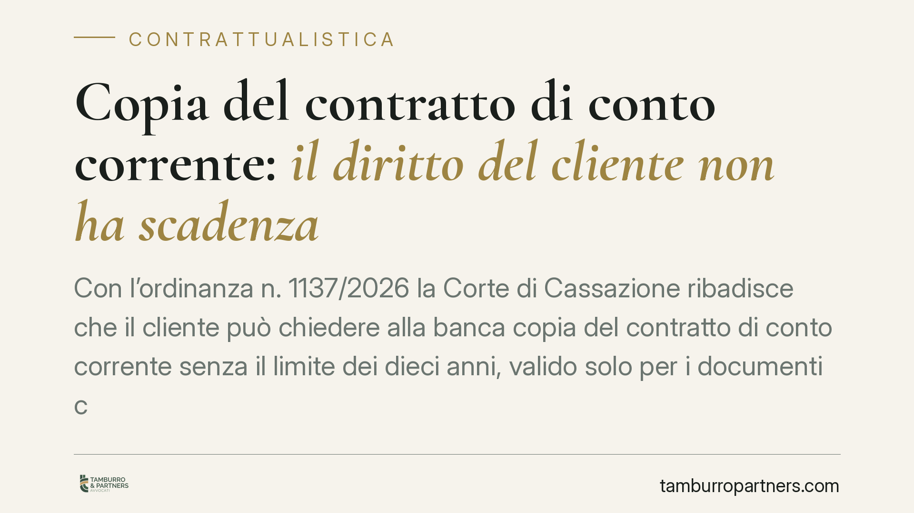

Copia del contratto di conto corrente: il diritto del cliente non ha scadenza
Con l'ordinanza n. 1137/2026 la Corte di Cassazione ribadisce che il cliente può chiedere alla banca copia del contratto di conto corrente senza il limite dei dieci anni, valido solo per i documenti contabili. Chiarisce inoltre che l'assenza di contestazione degli estratti conto non sana la nullità delle clausole. Una decisione che rafforza la posizione di correntisti e imprese.

Il caso e il principio affermato
Un correntista chiede alla propria banca copia del contratto di conto corrente sottoscritto molti anni prima. L'istituto oppone il limite temporale di dieci anni previsto dall'art. 119, comma 4, del Testo unico bancario (TUB). La Corte di Cassazione, con l'ordinanza n. 1137/2026, chiarisce che quel limite riguarda i documenti contabili — come gli estratti conto — e non il contratto quadro, la cui copia il cliente può ottenere in qualunque momento del rapporto.
È un chiarimento importante: il contratto di conto corrente non "scade" ai fini del diritto di accesso. Finché il rapporto è in essere, o comunque per i profili che ne derivano, il cliente conserva la facoltà di richiederne copia.
Inquadramento normativo
L'art. 119 TUB (d.lgs. n. 385/1993) disciplina le comunicazioni periodiche alla clientela e il diritto di ottenere documentazione. Il comma 4 stabilisce che il cliente, colui che gli succede a qualunque titolo e chi subentra nell'amministrazione dei suoi beni hanno diritto di ottenere, a proprie spese, copia della documentazione inerente a singole operazioni poste in essere negli ultimi dieci anni.
La Cassazione distingue nettamente. Il limite decennale opera per la documentazione delle singole operazioni (natura contabile). Il contratto di conto corrente, invece, è l'atto costitutivo del rapporto: non è una "singola operazione" e non soggiace a quella soglia temporale. Negarne copia significherebbe privare il cliente della possibilità di verificare le condizioni pattuite, comprese quelle potenzialmente nulle.
Sul secondo profilo, la Corte richiama l'art. 1832 c.c.: l'approvazione — anche tacita — dell'estratto conto rende inoppugnabili le registrazioni contabili sotto il profilo del fatto, ma non sana i vizi genetici delle clausole. In altre parole, la mancata contestazione degli estratti non trasforma in valida una clausola nulla, ad esempio per interessi anatocistici o per commissioni non pattuite per iscritto.
Implicazioni pratiche
Per il correntista — persona fisica o impresa — la pronuncia amplia in concreto la tutela. Chi sospetta l'applicazione di condizioni illegittime può richiedere il contratto originario per verificarne il contenuto, a prescindere da quanto tempo sia trascorso dalla stipula.
È un punto decisivo nelle controversie bancarie. Molte contestazioni (anatocismo, usura, commissioni di massimo scoperto) presuppongono la disponibilità del documento contrattuale. Senza il testo pattuito è difficile provare l'assenza di una valida pattuizione scritta, requisito che il TUB impone a pena di nullità.
La banca, dal canto suo, non può opporre il decorso del tempo per rifiutare la copia del contratto. Può legittimamente chiedere il rimborso dei costi di riproduzione e un termine ragionevole per l'estrazione, ma non negare l'accesso in radice.
Resta ferma la distinzione: per gli estratti conto e la documentazione contabile il limite dei dieci anni continua ad applicarsi. Consigliamo quindi di attivarsi tempestivamente quando servono anche i dati contabili storici.
Cosa fare in concreto
- Formalizza la richiesta per iscritto, indirizzandola alla banca con riferimento espresso all'art. 119 TUB e specificando che chiedi copia del contratto di conto corrente, non solo degli estratti.
- Usa un canale tracciabile (PEC o raccomandata A/R) e conserva la ricevuta: la data della richiesta è rilevante per far decorrere i termini di risposta.
- Distingui le richieste: separa la copia del contratto — non soggetta al limite decennale — dalla documentazione contabile, per la quale vale la soglia dei dieci anni.
- Mettere a bilancio i costi: la banca può addebitare le spese di riproduzione. Verifica che siano proporzionate e documentate.
- In caso di rifiuto o silenzio, valuta il ricorso all'Arbitro Bancario Finanziario (ABF) o l'azione giudiziale. Prima di agire, rivolgiti a un professionista per un'analisi del rapporto.
La pronuncia consolida un orientamento favorevole alla trasparenza del rapporto bancario. Per chi intende contestare condizioni applicate nel tempo, disporre del contratto originario è spesso il primo passo indispensabile.
---
*Contributo informativo a cura di Tamburro & Partners - Avv. Giuseppe Tamburro. Non costituisce parere legale.*
Ogni contratto ha il suo equilibrio.
Se vuoi una revisione delle clausole o una redazione su misura, scrivi allo studio. Ti rispondiamo entro un giorno lavorativo.